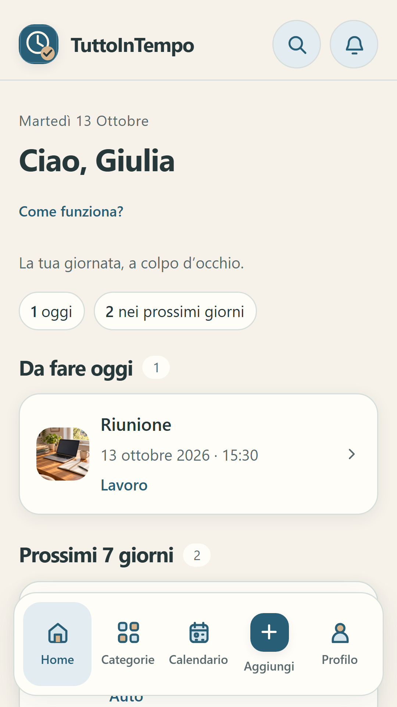

Auto
Assicurazione e rate, bollo, revisione, manutenzione e chilometri.
TUTTOINTEMPO · VERSIONE 1.0.0
Le bollette. Il tagliando. Gli abbonamenti. Quella spesa da dividere. Scadenze, avvisi, documenti e conti quotidiani, tutti nello stesso posto.
Android, iPhone e iPad · Dati locali e cloud facoltativo

Le tue scadenze. I tuoi avvisi.
La tua organizzazione, in un solo posto.
Anche senza account.
Con il cloud, quando lo scegli.
16 categorie per organizzare la giornata. Crea i tuoi profili, collega le scadenze e personalizza i campi quando serve.
Assicurazione e rate, bollo, revisione, manutenzione e chilometri.
Scadenze e manutenzione della moto, con profili separati.
Bollette, affitto, mutuo, condominio e manutenzioni.
Organizza gli appuntamenti che hai già fissato. Nessuna indicazione di cura.
Riunioni, videocall, consegne, fatture e rinnovi professionali.
Compleanni, anniversari, prenotazioni e attività personali.
Scuola, iscrizioni, rette e impegni delle persone di casa.
Appuntamenti, toelettatura e pet sitter, senza indicazioni veterinarie.
Scadenze di patente, passaporto, carta d’identità, PEC e altri documenti.
Rinnovi, fine delle prove gratuite e termini per la disdetta.
Consegne, resi, riparazioni e scadenze delle garanzie.
Partenze, check-in, prenotazioni e documenti da controllare.
Allenamenti, lezioni, gare, iscrizioni e quote.
Entrate, uscite, budget mensili, pagamenti e salvadanai.
Gruppi, partecipanti, quote e riepiloghi da condividere tramite file.
Scadenze e campi personalizzati per ciò che vuoi organizzare.
Scegli data e ora per ogni avviso. Avviso principale all’orario della scadenza. Gli avvisi aggiuntivi si inseriscono accanto alla scadenza, con orari in formato 24 ore.
Imposta attività singole o ricorrenti, modifica una voce o la serie e conserva lo storico dei pagamenti. Le frequenze suggerite sono modificabili: verifica sempre il tuo caso con documenti ed enti competenti.
Crea i profili di auto, moto, casa, familiari o animali. La guida propone le scadenze pertinenti: puoi compilarle, saltare un passaggio e riprendere in un secondo momento.
Usa l’interfaccia in italiano o inglese e imposta il tuo fuso orario. Consulta le scadenze dalla Home o dal calendario, ritrova le attività e segna quelle completate. Le icone informative spiegano il campo o la funzione che stai usando.
Gestisci budget, salvadanai e pagamenti. Nei gruppi registra chi ha pagato, calcola le quote e condividi il riepilogo o il file da importare nell’app. Le copie degli altri partecipanti restano indipendenti.
Aggiungi foto e documenti PDF, JPG, PNG o WebP, fino a 2 MB per file. Esporta un backup dell’archivio e ripristinalo dopo aver controllato il riepilogo: il ripristino sostituisce la copia locale.
Accedi con il codice ricevuto via email. L’accesso da solo non carica i dati: confronta le copie e scegli quale collegare. La sincronizzazione gratuita funziona sui tuoi dispositivi mentre l’app è aperta e online.
Attiva separatamente gli avvisi email, con il tuo consenso. Il servizio usa la copia sincronizzata e invia titolo, data e ora della scadenza. Puoi disattivarli anche con la sincronizzazione in pausa.
Prima di eliminare l’account scegli se esportare un backup. Una conferma avvia la cancellazione irreversibile dell’account e dei dati cloud e locali collegati; i dispositivi offline la applicano alla riapertura con Internet.
Gli avvisi locali dipendono dai permessi e dalle impostazioni del dispositivo. Su iPhone e iPad riapri periodicamente l’app per aggiornare i prossimi avvisi programmati. Nella versione web la pagina deve restare aperta per gli avvisi locali; gli avvisi email autorizzati funzionano anche a app chiusa.
Segui la guida per le scadenze del profilo, oppure aggiungi direttamente ciò che vuoi ricordare.
Controlla il suggerimento e scegli data e ora. Puoi aggiungere altri avvisi nello stesso modulo.
Consulta calendario, documenti e conti. Se vuoi, collega l’archivio al tuo account e attiva gli avvisi email.
La versione corrente comprende le funzioni descritte qui. Stiamo completando le configurazioni e il collaudo necessari alla distribuzione su Google Play e App Store, per Android, iPhone e iPad.
Non ancora disponibile al pubblico sugli storePremium senza pubblicità è previsto come acquisto unico da 10 € in Italia; il prezzo definitivo sarà quello mostrato dallo store. Premium, annunci, condivisione cloud tra utenti e lettura automatica dei documenti (OCR) non sono attivi nella configurazione corrente.
Non ancora. Google Play e App Store sono in preparazione; questa pagina pubblicherà i collegamenti ufficiali quando la distribuzione sarà disponibile.
Puoi usare l’archivio locale senza account. Account, sincronizzazione personale e avvisi email sono facoltativi e gratuiti. Il futuro Premium servirà soltanto a rimuovere la pubblicità.
L’avviso principale è previsto all’orario della scadenza, con gli avvisi abilitati e i permessi necessari. Aggiungi altre date e ore soltanto quando vuoi ulteriori promemoria. Tutti gli orari sono in formato 24 ore.
Accedi al cloud, collega la tua copia e attiva “Ricevi gli avvisi anche via email” in Profilo → Avvisi e notifiche. Sono usate le scadenze della copia sincronizzata. Mettere in pausa la sincronizzazione o uscire dall’account non revoca il consenso alle email: puoi disattivarle nella stessa schermata.
Esporta il riepilogo o un file della spesa e scegli WhatsApp o un’altra applicazione di condivisione. Chi riceve il file può importarlo in TuttoInTempo. Le copie tra partecipanti non si aggiornano automaticamente; la condivisione cloud tra utenti è ancora da completare.
Sì. Puoi saltare un passaggio o fermarti e riprendere la guida in seguito, senza perdere le scadenze già inserite.
Esporta prima un backup. Se hai collegato la copia cloud, accedi sul nuovo dispositivo, confronta le copie e scegli quella da usare. Le autorizzazioni alle notifiche vanno concesse sul nuovo dispositivo. I file esportati contengono dati personali in chiaro: conservali in un luogo sicuro.
Prima scegli se esportare un backup, continuare senza esportare o annullare. La conferma finale elimina definitivamente account, archivio online e copie locali collegate nelle installazioni aggiornate. Un dispositivo offline applica la cancellazione quando riapri l’app con Internet. File esportati ed email già ricevute restano nelle rispettive destinazioni. Come richiedere l’eliminazione.
No. Salute e Animali organizzano appuntamenti e impegni già scelti da te; non propongono terapie, farmaci, vaccinazioni o diagnosi. Le ricorrenze generali sono suggerimenti da verificare, non consulenza medica, legale o finanziaria.
Pubblicità e acquisto Premium non sono ancora attivi nell’app corrente. Questo sito di presentazione non integra annunci, moduli, cookie di profilazione o strumenti di analisi. GitHub Pages tratta i dati tecnici delle visite secondo la propria informativa. Leggi la privacy aggiornata.